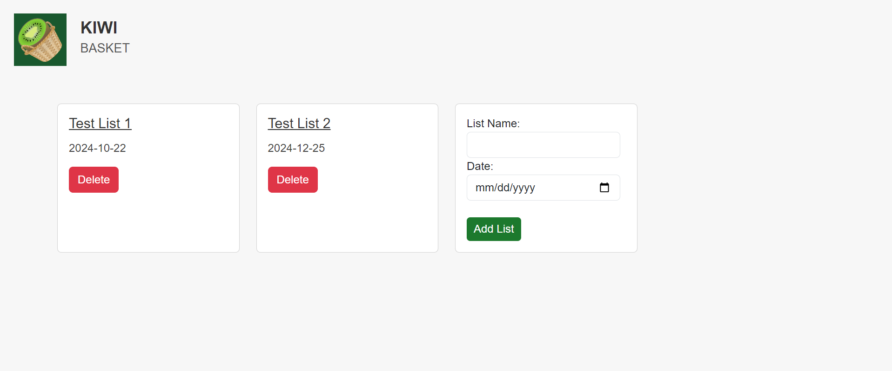
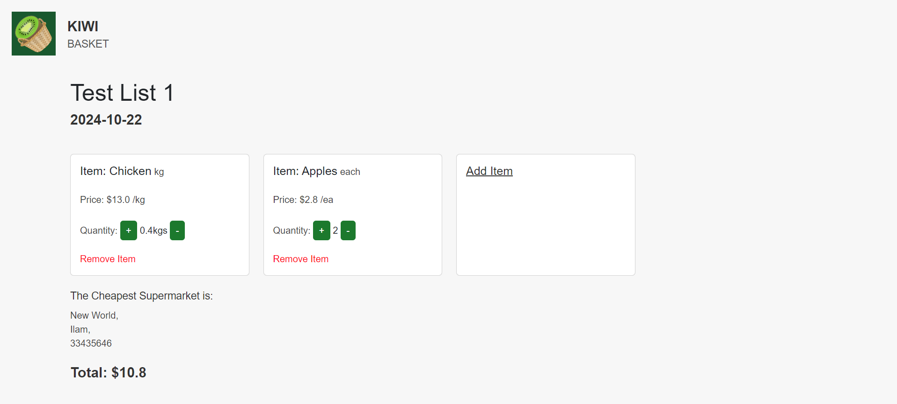
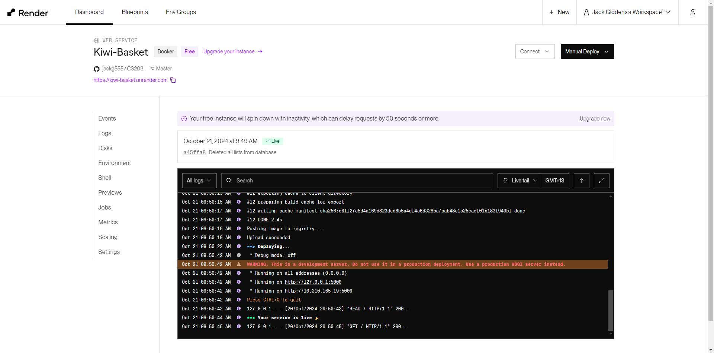
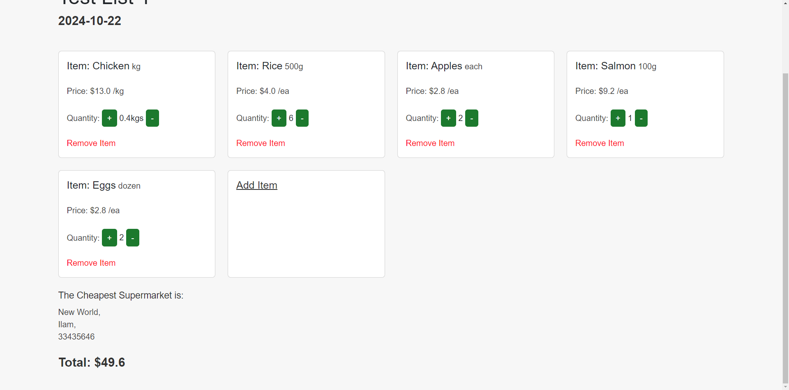

During my second year of study, I developed a shopping list program using Flask and SQL databases. This project was aimed at providing a streamlined way for users to create, manage, and compare shopping lists, with functionality like tracking item prices and suggesting the most affordable supermarket. Since I was working solo, I didn’t hold team meetings, but I set personal milestones using Trello. Every time I reached a goal, I would plan the next steps and push forward. The process was all about keeping focused and steadily working toward the end goal.
At the start of development, I wasn’t overly concerned with diving straight into the actual project. I spent a lot of time understanding SQL databases and Flask. My first few commits involved tinkering with some class code and trying out modifications, just to get a feel for how it all worked. By the end of this phase, I had a basic database setup running where I could input data through Postman and display it using HTML. It wasn’t much, but it gave me a solid foundation to build on. The next milestone was to get user input working, and from there, I could start building more complex features.
There were definitely some challenges along the way. For example, when I was trying to pull data from an HTML form and input it into the database, I ran into a few issues. I eventually figured out that adding a second value for input into the table, like a date input, helped solve the issue. After that, things started to fall into place. The program could now handle user input, post it to the database, and display the lists created. I also set up a db.py file to manage the values and tables for the project, which helped me feel more organized and clearer about where everything was going.
One of the more difficult features I implemented was allowing users to click on a list and view its items. I had some trouble fetching the correct list from the database based on a list ID passed through the URL, but once I figured out the correct way to handle the query, things started working fine. With this new functionality, the project was quickly evolving into something more interactive.
I had the major functionality of the app working, including the ability for users to create a new list, display each list, view the content inside the lists, and add items. I also added a total price calculation for the items in a single supermarket. Although I wasn’t yet comparing prices between supermarkets, this was a key step towards that. Afterward, I added the ability to modify item quantities. This involved implementing buttons that would increment or decrement the item quantity.
There were a few obstacles in this process, though. I had to figure out how to handle cases where users might try to add the same item more than once, and I decided that the app would simply increment the quantity of that item instead of duplicating it. It was a neat solution but required some logic to ensure it worked properly. Another challenge arose when dealing with items that were sold by weight (like meat). I had to adjust the program so that instead of incrementing the quantity by 1, it would do so by 0.1 when the price was set by weight. That small change made a big difference in how the app handled different types of products.
I also had to address the issue of preventing users from going below a quantity of 0. If the quantity of an item dropped to 0, the app would delete it from the list. This helped maintain accurate lists and prevent errors when managing items. My next big goal was adding a feature that compared supermarket prices based on the items in the user’s list, which proved to be a tricky task but ultimately worked out well.
One of the most difficult parts of the project was creating a function that could calculate the best supermarket based on the items in the user’s list. The data from the SupermarketsItems table came as a nested list, which made it a bit tricky to work with. I needed a flexible solution that could handle multiple supermarkets, not just a hard-coded if-else condition. I ended up using a dictionary to store prices for each supermarket, which allowed me to dynamically calculate the total price for each supermarket and return the lowest price. It was a tricky problem to solve, but once I had it figured out, everything fell into place.
In the final stages of development, I focused on tidying up the project. I added a delete list function, implemented some basic CSS styling using Bootstrap cards, and added validation for list creation. To make sure the app was polished and user-friendly, I also spent time fixing up the look and feel of the HTML pages. I hosted the app on Docker and Render, which made it accessible to anyone online. Finally, I did some code cleanup, fixing naming standards and adding comments for clarity.
By the end of the project, I had a fully functional shopping list application that not only allowed users to create and manage lists but also compared prices between different supermarkets to find the best deal. It was a rewarding experience to see the project evolve from just an idea into a working product, and it gave me valuable insights into working with databases, Flask, and web development in general.
